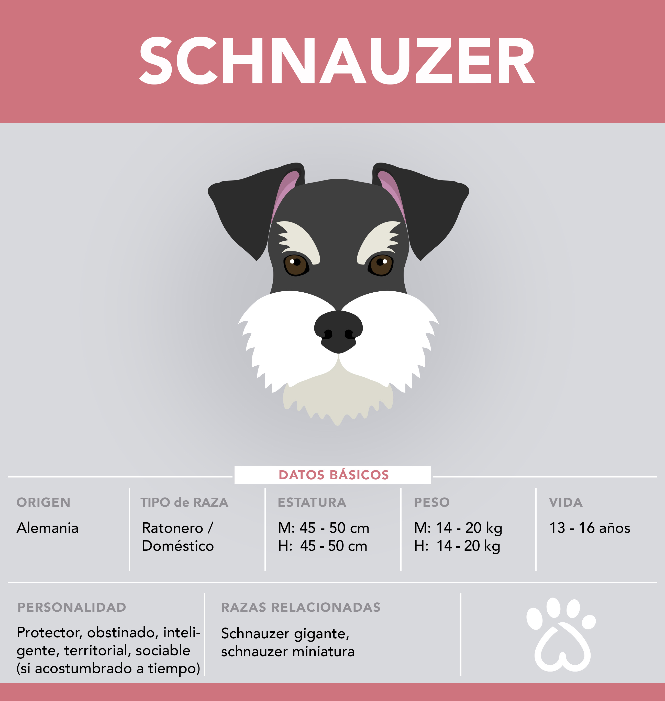

La raza de perros Schnauzer, es sociable y cariñosa. Esta raza de perros tienden a convertirse
en un miembro mas de la familia y quieren en especial a los niños. Son protectores por naturaleza
y siempre avisarán con sus ladridos cualquier peligro. Esta raza es muy inteligente pero pueden llegar
a ser un poco obstinados por lo que es recomendable empezar un entrenamiento básico a temprana edad y
ofrecerles la oportunidad de ejercitarse diariamente.
Los encontraremos en color negro, blanco, sal/pimienta y negro/plata.
